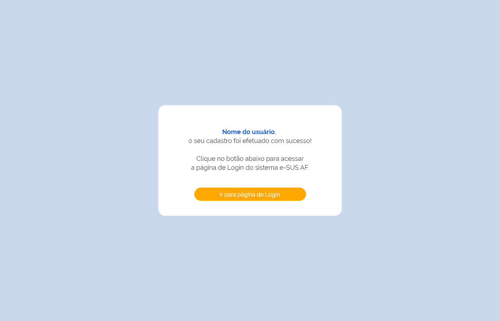
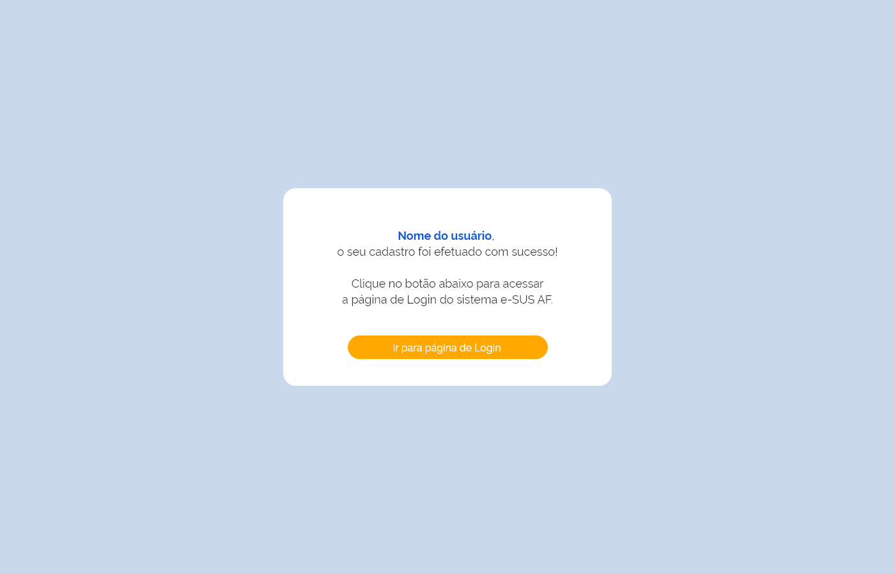
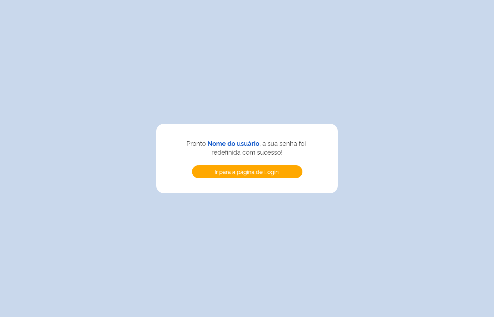
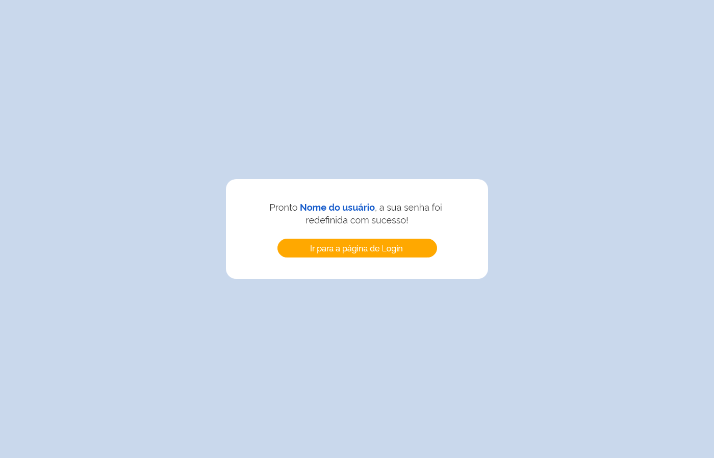

HU001 - Cadastro e Login
Descrição
Como usuário, desejo realizar o cadastro / login na aplicação, de modo a ter acesso a recursos exclusivos.
Regras
- Ao tentar realizar o cadastro o sistema deverá verificar se o CPF já existe na base
- Após preencher o campo CEP, o sistema deverá preencher os demais campos do formulário de endereço automaticaAo com base noa dados oriundos dos Correios
- Após finalizar o cadastro, o sistema deve enviar um e-mail de confirmação para o usuário;
- O usuário, após confirmar o cadastro por e-mail, deverá conseguir realizar login usando suas credenciais;
- A senha do usuário deverá ter:
- Mínimo de 8 caracteres
- Máximo de 30 caracteres
- Letras maiúsculas: pelo menos uma
- Letras minúsculas: pelo menos uma
- Número: pelo menos um
- Caracteres especiais: pelo menos um
Critérios de aceite
Cenário: Realizar novo cadastro
Dado que o usuário esteja na tela de realizar novo cadastro
Quando ele preencher o formulário de cadastro com seus dados
Então enviar um e-mail de validação de cadastro para ele
Cenário: Tentativa de cadastro de usuário já existente
Dado que o usuário preencha o formulário na tela de realizar cadastro
Quando ele clicar no botão de se cadastrar
E o usuário já existir na base
Então apresentar uma mensagem de erro
Cenário: Realizar login com credenciais válidas
Dado que o usuário esteja na tela inicial
Quando ele preencher os campos
E suas credenciais forem válidas
Então realizar login do usuário
Cenário: Realizar login com credenciais inválidas
Dado que o usuário esteja na tela inicial
Quando ele preencher os campos
E suas credenciais forem inválidas
Então apresentar mensagem de erro de credenciais inválidas
Cenário: Redefinir senha de usuário existente
Dado que o usuário preencha o formulário de redefinir senha
E esteja cadastrado na base
Quando ele clicar no link de redefinir senha no e-mail enviado à ele
Então apresentar formulário para criação de nova senha respeitando as regras de senha da aplicação
Cenário: Redefinir senha de usuário inexistente
Dado que o usuário esteja na tela de redefinir senha
Quando ele preencher o formulário
E o usuário não estiver cadastrado na base
Então apresentar uma mensagem de usuario inexistente
Definição de pronto
- A funcionalidade deve estar completa e funcional.
- Todos os critérios de aceite devem ser atendidos.
- A história deve ter sido testada e validada.
- A documentação da história deve estar completa.
Modelo de dados
| Nível | Atributo | Descrição | Cardinalidade | Tipo de Dados | Tamanho | Formato | Obrigatoriedade |
|---|---|---|---|---|---|---|---|
| Identificação do usuário | 1..1 | sim | |||||
| 1 | Foto | Foto de usuário | 1..1 | não | |||
| 1 | CNS | Número do cartão nacional de saúde do usuário | 1..1 | texto | 15 | XXXX XXXX XXXX XXX | não |
| 1 | CPF | Número do CPF do usuário | 1..1 | texto | 11 | XXX.XXX.XXX-XX | sim |
| 1 | Nome | Nome do usuário | 1..1 | texto | 80 | sim | |
| 1 | E-mail do usuário | 1..1 | texto | 80 | sim | ||
| 1 | Celular | Número de celular do usuário | 1..1 | texto | 11 | (XX) XXXXX-XXXX | sim |
| 1 | Senha | Senha do usuário | 1..1 | Texto | 30 | sim | |
| Endereço | 1..N | sim | |||||
| 2 | Tipo de endereço | Tipo de endereço (Residencial, Comercial, Profissional, Outro) | 1..1 | texto | 15 | sim | |
| 2 | CEP | CEP do endereço do usuário | 1..1 | texto | 8 | XX.XXX-XXX | sim |
| 2 | UF | UF do usuário | 1..1 | texto | 2 | XX | sim |
| 2 | Município | Município do usuário | 1..1 | texto | 60 | sim | |
| 2 | Endereço/Logradouro | Endereço do usuário | 1..1 | texto | 250 | sim | |
| 2 | Bairro | Bairro do usuário | 1..1 | texto | 120 | sim | |
| 2 | Complemento | Complemento do endereço do usuário | 1..1 | texto | 120 | sim | |
| 2 | Número | Número do endereço do usuário | 1..1 | texto | 10 | sim |
Design Conceitual
 



 
